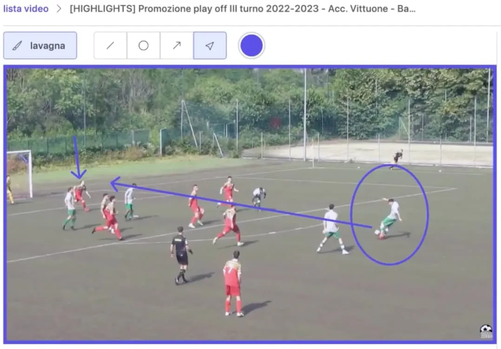

Calcioclip: 2 lezioni dal suo fallimento
Calcioclip era un'applicazione per agli allenatori di calcio. Permette di annotare i video delle partite e di condividere delle clip contenenti queste annotazioni con i giocatori. Non abbiamo venduto nemmeno un abbonamento. Secondo me, per due motivi. Ma partiamo dall'inizio.

L'idea
Calcioclip è un'idea di Fabri. Siamo amici fin dall'infanzia. Siamo in un bar a Milano. È tardi, abbiamo bevuto. Mi avvicino e gli chiedo: «Hai qualche nuova idea per far soldi?»
«Ne ho una».
«Vai!» dico, mentre appoggio i gomiti sul tavolo, con un mezzo sorriso.
«Durante la mia carriera calcistica, gli allenatori hanno sempre cercato di aiutarmi a correggere gli errori. Qualche volta a parole. Altre volte davanti a una lavagna. Verso la fine della mia carriera, hanno iniziato a usare i video. Tornavano indietro fino a poco prima del mio errore, mettevano in pausa, mi spiegavano il contesto dell'azione, poi mandavano avanti fino al momento esatto del mio errore, di nuovo pausa, spiegazione.»
«Funzionava meglio con i video?» lo interrompo.
«Molto meglio. Se sviluppassi un'app del genere, secondo me funzionerebbe».
L'idea mi è sembrata subito sensata per diverse ragioni:
- zero costi iniziali: l'investimento richiesto era minimo
- mercato di nicchia: la lega amatoriale italiana, un segmento trascurato dai concorrenti focalizzati sulle leghe professionistiche
- esperienza personale: ero certo dell'utilità dei video per migliorare nello sport. Li usano i maestri di sci. Io sono migliorato molto riguardandomi. Lo stesso mio figlio
- credibilità di Fabri: il suo background come ex giocatore amatoriale poteva darci un vantaggio nel presentarci alle squadre di calcio per proporre l'app
Il risultato
Ho coinvolto un altro amico, Stefan, e in quattro mesi abbiamo sviluppato CalcioClip, un'app web.
Dopo aver completato lo sviluppo, Fabrizio ha iniziato a contattare squadre di calcio amatoriali in tutta Italia. Il suo obiettivo principale con ogni chiamata era ottenere una dimostrazione a distanza. Il concetto suscitava interesse in teoria e, nell'arco di quattro mesi, abbiamo contattato oltre 500 squadre. Poche demo, zero vendite.
Non ci siamo fermati lì: abbiamo provato a rivolgerci anche a squadre professionistiche, sperando di migliorare i loro programmi di allenamento giovanile, ma anche questa strada si è rivelata un vicolo cieco. In risposta a questi insuccessi, abbiamo rivisto più volte la nostra strategia di vendita, modificando l'offerta commerciale da un abbonamento annuale iniziale di 3000€ a un abbonamento mensile molto più accessibile di 49€.
Abbiamo chiuso il progetto a ottobre 2023.
Due lezioni
All'inizio abbiamo pensato che il nostro interlocutore fosse l'allenatore. Abbiamo scoperto che le decisioni di acquisto richiedevano l'approvazione del Direttore Generale, il quale a sua volta spesso necessitava dell'autorizzazione del Presidente della società. Inoltre, anche con l'interesse del Direttore Generale, se l'allenatore non era favorevole, la vendita si bloccava. Gestire questa situazione si è rivelato molto complesso.
Lezione 1: cerca di capire in fretta chi decide l'acquisto.
Attualmente, gli allenatori migliorano le abilità dei giocatori con consigli rapidi sul campo o discussioni negli spogliatoi, utilizzando lavagne o sketch su taccuini. Il nostro prodotto non era progettato per ridurre il loro carico di lavoro; al contrario, avrebbe introdotto ulteriori ore di analisi post-partita, potenzialmente aggiungendo tre o quattro ore di lavoro a settimana.
Lezione 2: uno strumento non è una soluzione.
Magari i video annotati sono meglio della lavagna, ma introducono problemi che oggi non ci sono: chi registra i video? Come li registra? Quante ore di lavoro in più deve metterci un allenatore? I vantaggi dei video sono percepiti come superiori a questi problemi?
Scritto il 30 aprile 2024 su birbi.biz, che chiude: il pezzo è stato spostato qui così com'era, con lo screenshot portato in questo repo. Hai domande o commenti? Scrivimi a luca@mucca.design.